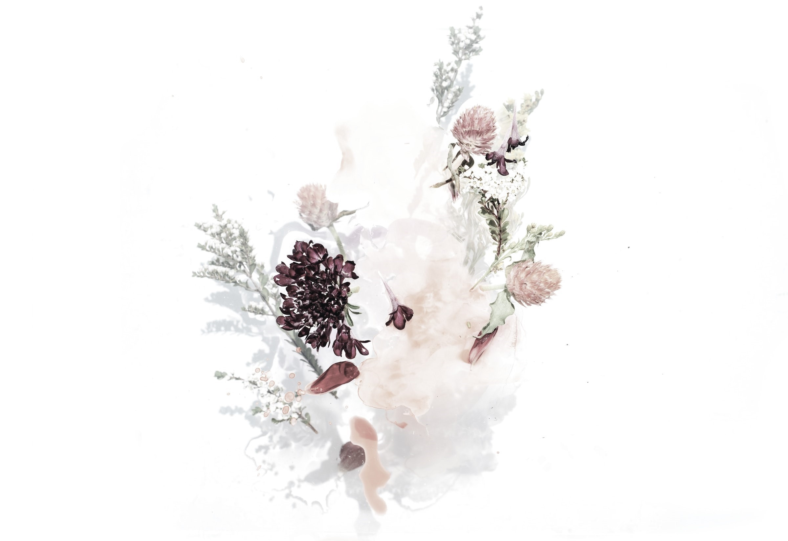
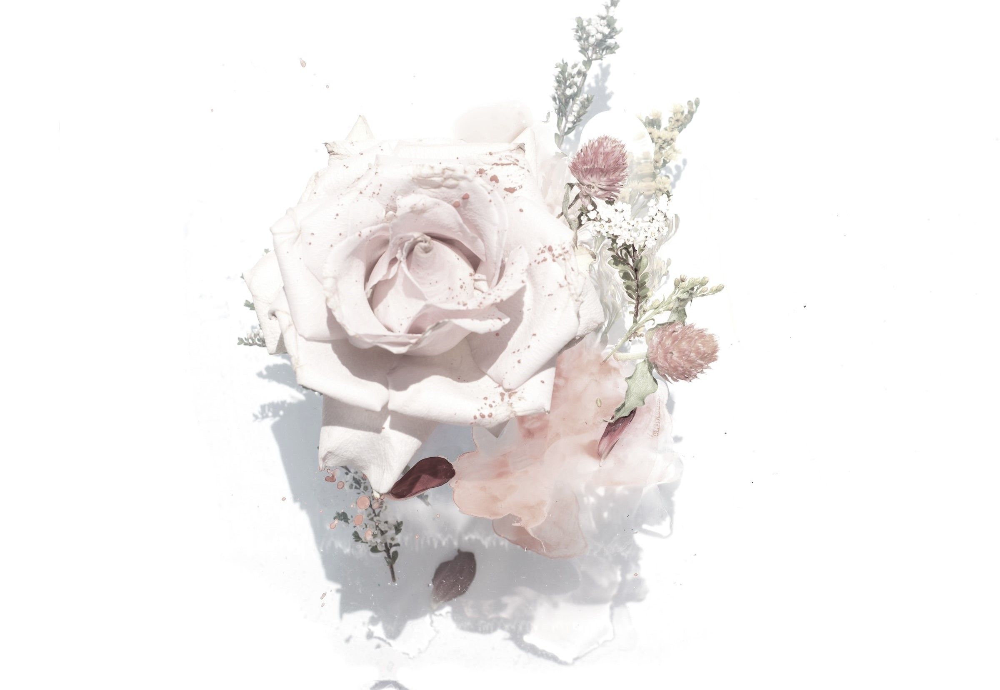
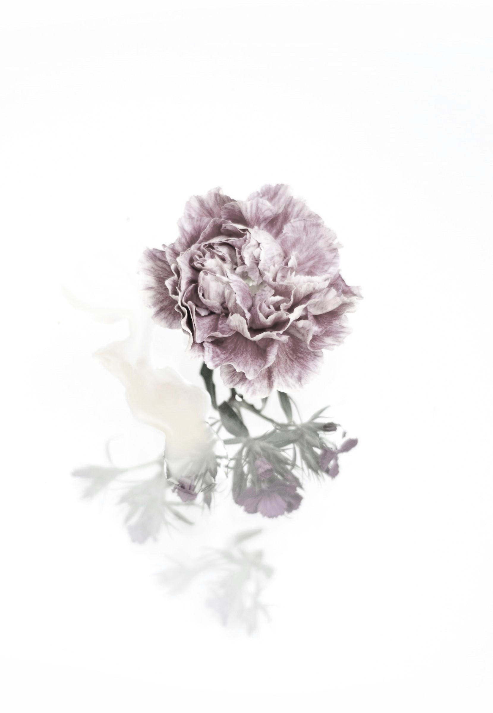
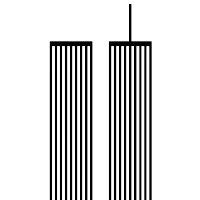
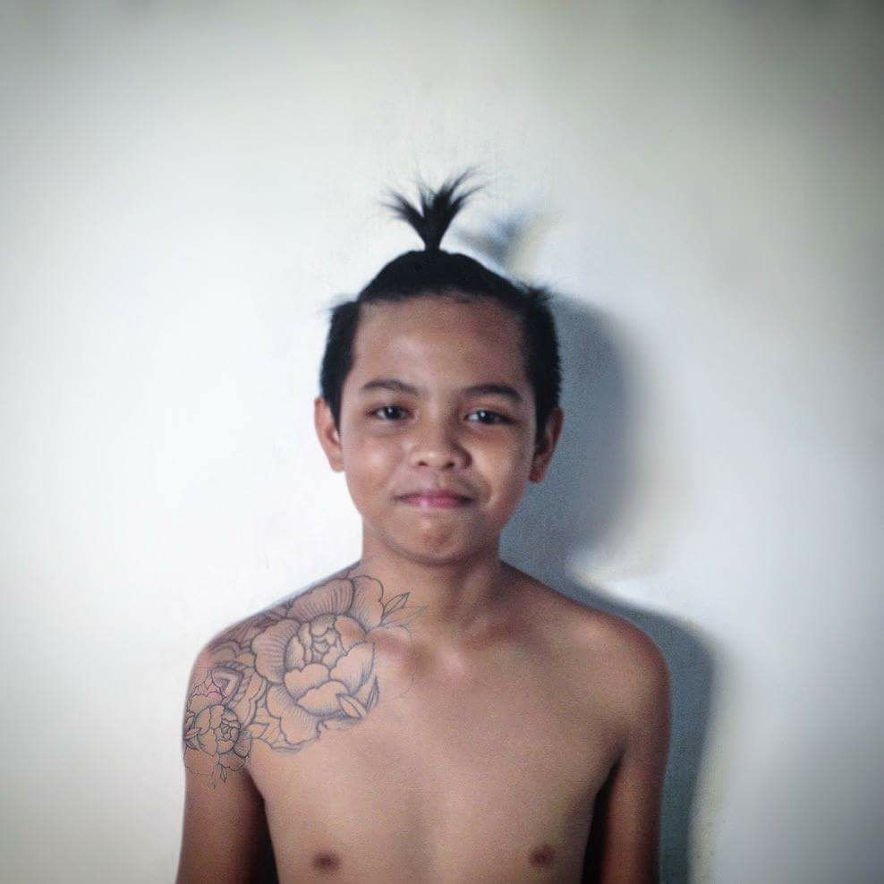
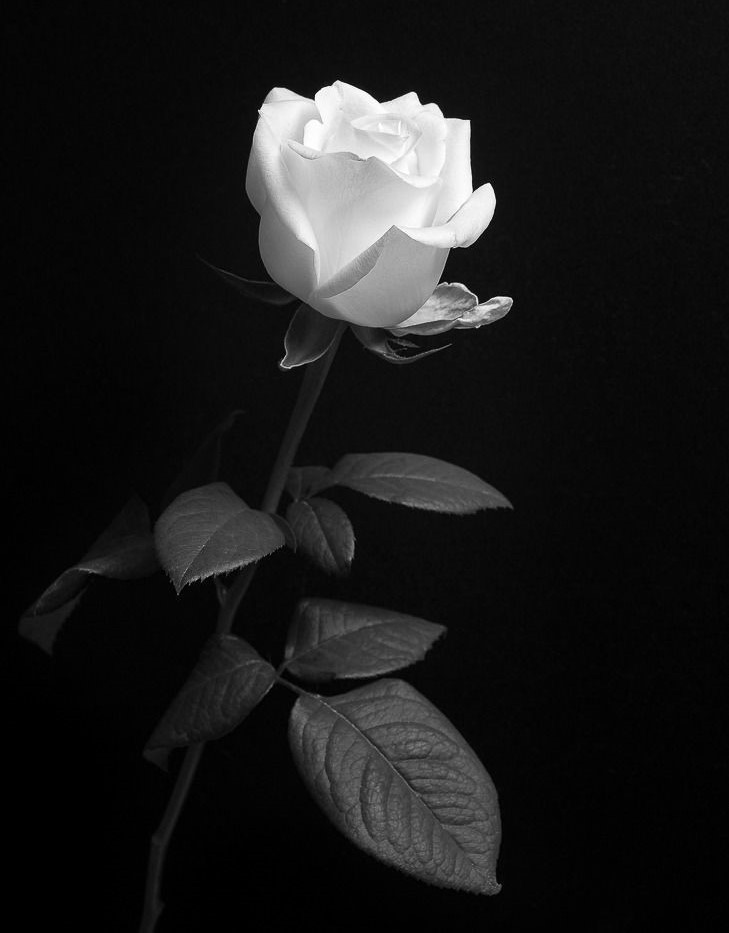
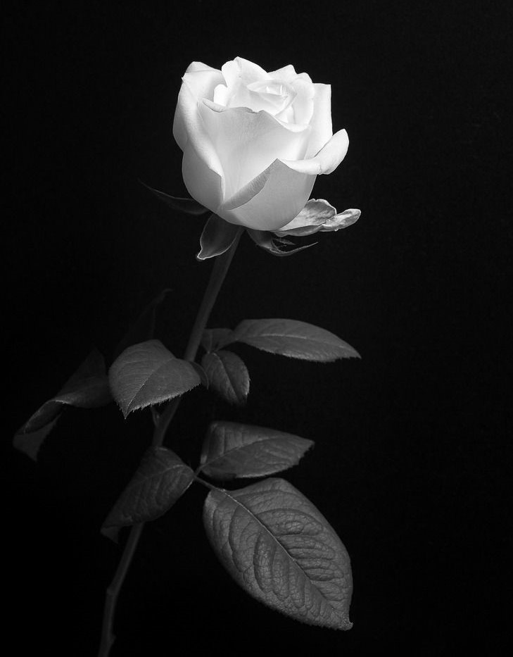
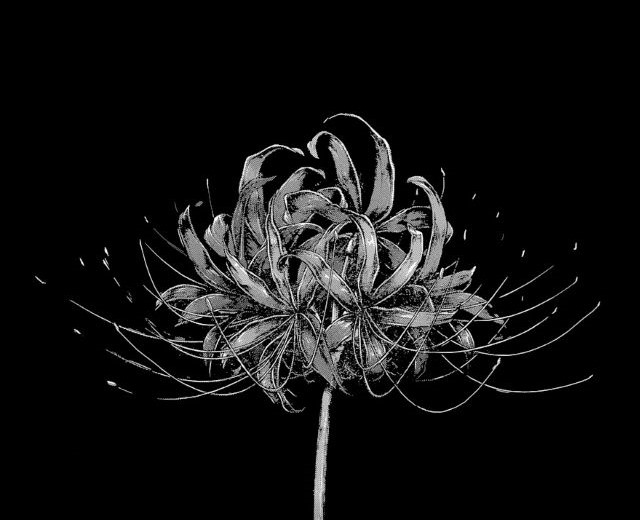
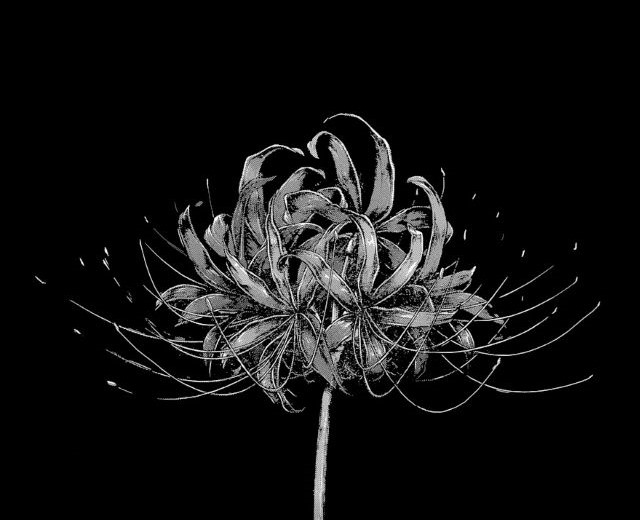

911
September 11th: A Poem
Might it be, as my mother said to me on this ugly, sinful day,
That the world is on its last go-round?
Hijacked wild birds strip the sky of its innocent morning breath
Steel towers crumple like playing cards on an uneven metal table
Unrehearsed screams we dare not hear leap from windows
Into the open, bottomless palms of God
I cannot stand to watch life reduce
Itself to powdery dust and soot lathering the devil’s inflamed mouth
But I am fixated on the television anyhow:
Is this what slavery was like?
Is this what the holocaust was like?
Is this what famine is like?
Is this what war is like?
Is this how you felt, dear mother, when King and the two Kennedys were killed?
I want to stitch up the sky, deny humans the right to fly
Cry until my tears have washed hatred
From the mildewed underarms of history
And I want to say to the firemen
Ah, yes, the firemen:
Your husband, your father, your brother, your uncle, your friend
Thank you for speeding to the end of
Your time and thank you for showing us that
Courage is a soul so unselfish it would
Scale a collapsing building to liberate a stranger
Even as your blood relatives wonder if you are alive —
From the remains of this madness
I detect a heartbeat called life
From the remains of this madness
I smell an aroma called love
From the remains of this madness
I embrace a body called humanity
From the remains of this madness
I construct a dream called hope
From the remains of this madness
I will ride the wings of the deceased
Into the clouds, scribble their names on the sun
Erect a memorial to the moon, chant the blues
For New York City, then resurrect a world
Where a new-born rose will jut through the broken concrete.
© 2001 Kevin Powell
Kevin Powell is a poet, journalist, and civil and human rights activist.
By 9/11 Memorial Staff




Officers
- 

Flowers


.jpg)
 


 
